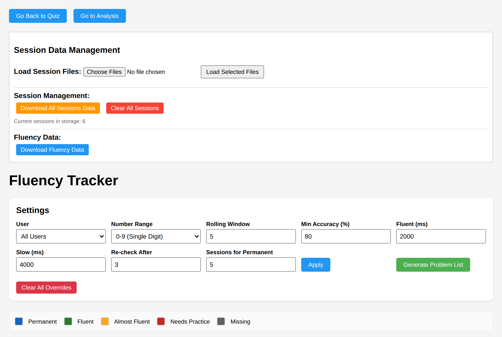
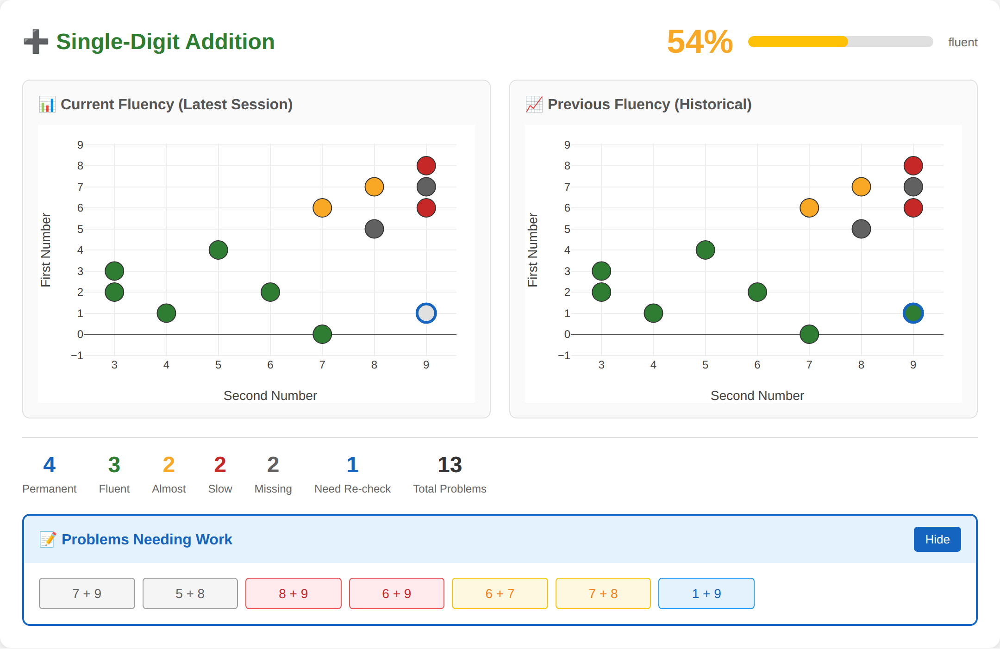
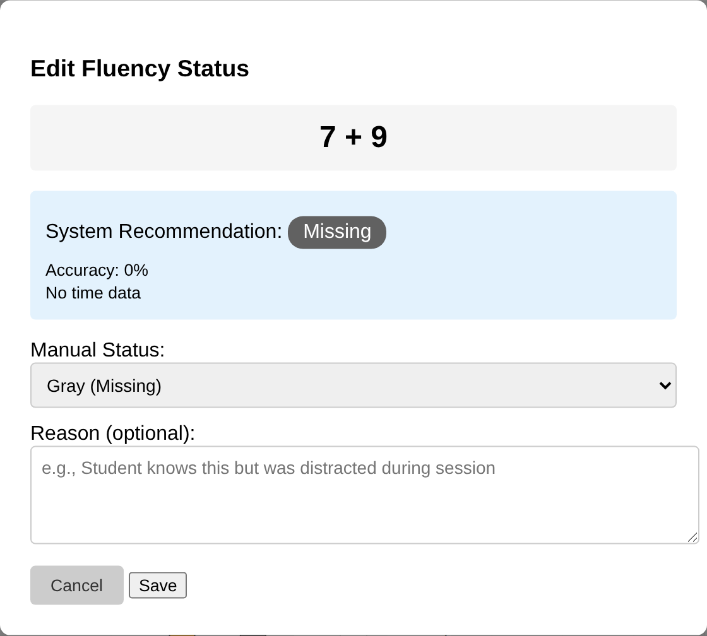

Math Quiz — Fluency: current state & proposals
A fluency-only companion to the compare report: it lifts the
fluency model out of that report, documents what the fluency tracker actually does today (with fresh
screenshots), answers “is fluency in the SQLite data model yet?”, and proposes two changes — an
integrated fluency view on the analysis page and an overhauled fluency tracker — with the coding work each needs.
docs/SPEC.md and the sequenced roadmap in
docs/PLAN.md. This page is the fluency-focused snapshot + design proposal; the
rubric below is reproduced from the compare report’s §5 / SPEC §3 so fluency can be read end-to-end in one place.
★ Overview & TL;DR
Three legacy surfaces (quiz / fluency tracker / analysis) plus the newer anchor + SQLite engine are converging into one product. Fluency is the through-line — and it’s the least integrated piece.
- The model is settled — a red → yellow → green → blue rubric, applied at three levels (operation / category / problem). See §1.
- The tracker works but is on the old foundation — it rebuilds an in-memory DB from session JSON in
localStorage(the store SPEC §8 retires), evaluates per problem only (no category rollup), and never shows blue on the grid (only as a count). See §2. - Fluency is NOT in the SQLite schema — only raw attempts are stored; status is recomputed every load. A
FluencySnapshotstable is stubbed but unbuilt. See §3. - Proposal A — add a metric toggle to the analysis grid (avg response time ⇄ fluency rating) and a category-rollup strip using a minimum (worst-of) rule. See §4.
- Proposal B — rebuild the tracker on the per-user SQLite store with a shared DOM-free fluency engine, true category rollups, and blue rendered on the grid. A and B converge on one engine + one grid. See §5 · coding work in §6.
1 The fluency model
The conceptual machinery, reproduced from the compare report’s §5. Canonical version:
SPEC.md §2–§5.
8×6 as 8×5+8).
Accuracy is table stakes, not the headline metric — the product optimizes automaticity (speed) with
accuracy as the rubric’s floor.
The rubric: red → yellow → green → blue
One stoplight-plus scale, applied at three levels — whole operation, category within an operation, and individual problem (with full cross-session history). Thresholds are adjustable & level-appropriate (not a fixed 2 s).
| Status | Meaning | Signature |
|---|---|---|
| red | Really doesn’t know it. | Makes errors, or so effortful it’s effectively unknown. Accuracy floor — below the accuracy bar ⇒ red. |
| yellow | Kind of knows it — not fluent. | Accurate on nearly all (odd slip aside) but slow/effortful; may use strategies. Needs practice. |
| green | Fluent / near-fluent. | Fast + correct recently; not yet enough data for permanent — keep collecting/practicing. |
| blue | Permanent — “in ice.” | Green sustained across sessions; known cold, unlikely to be lost. |
red↔yellow boundary = accuracy; yellow→green→blue = automaticity (speed + durability).
Three levels of evaluation (SPEC §4)
The same rubric rolls up and drills down the same path, per operation:
- Operation — e.g. all single-digit addition.
- Category — the segmentation buckets: Add Zero, Add One, Add Two, Doubles, Tough 21, Hardest Six (and eventual ×/− equivalents).
- Individual problem — a single fact (e.g.
8 + 9) with its full longitudinal history.
Single-digit addition categorization
55 canonical facts (each commutative pair once) partition into five non-overlapping categories by the
smaller addend, plus a named hard subset. A fact is hard iff max(a,b) ≥ 6; the selector weights
hard facts 3×. Source: single_digit_addition_categorization.md →
engine/addition_segmentation.mjs.
| Category | Canonical | Pattern / note |
|---|---|---|
| Add Zero | 10 | 0 + n — easiest |
| Add One | 9 | 1 + n, from 1+1 |
| Add Two | 8 | 2 + n, from 2+2 |
| Doubles | 7 | n + n, 3+3…9+9 |
| Tough 21 | 21 | remaining non-double facts, addends 3–9 — the deliberate-practice set |
| Hardest Six | 6 | subset of Tough 21, both addends ≥ 6, not doubles — overlearn last |
| Total | 55 | Hardest Six counted inside Tough 21, not extra |
Modes & mastery (context): assess (form the estimate fast) vs practice (batched, mixed known:unknown); predictive (partial sample) vs thorough (every in-scope fact correct + fast) mastery verdicts. Detail in SPEC §6–§7.
2 What’s implemented in the fluency tracker today
The page is math_fluency.html + math_fluency.js (CT/CT’s work, with Randy’s
cleanup). It is functional and tested, but built on the old JSON store and evaluates per problem only.
Screenshots below are captured live from a seeded multi-session history (see
regenerate).

Fluent (ms) = 2000, Slow (ms) = 4000, Re-check After, Sessions for Permanent =
5. The legend is the canonical five-status rubric.
1+9, lower-right). The summary counts show all five statuses
(Permanent 4, Fluent 3, Almost 2, Slow 2, Missing 2) and a 54% fluent bar. Problems Needing Work
lists the gray/red/yellow facts. Note: blue appears only as a count — never as a marker on either
grid.
7+9 → Missing, 0% accuracy) and lets an operator override the status
with a reason. Overrides are stored per-user in localStorage and win over the computed status.How it computes status (the rubric in code)
The evaluator is evaluateFluencyStatus(attempts, thresholds) in
math_fluency.js. Per canonical fact (commutative pairs merged), over the last
windowSize (default 5) attempts:
| Output | Rule (defaults) |
|---|---|
| gray Missing | accuracy < minAccuracy (0.8) or zero correct in window. |
| red Needs practice | accurate, but median correct time ≥ redMs (4000). |
| yellow Almost | accurate, median in [greenMs, redMs) = [2000, 4000). |
| green Fluent | accurate, median < greenMs (2000). |
| blue Permanent | green in the last permanentSessions (5) consecutive sessions (length-guarded). Applied only to the combined dataset. |
| nodata | no attempts in scope (distinct from gray). |
What it does well — and the seams
Working today
- Per-fact status across + / − / ×, commutative-merged, with cross-session history.
- Blue (permanent) and needs-re-check are derived from session recency/durability.
- Manual overrides with reasons (operator judgment over the algorithm).
- Adjustable thresholds in the UI (window, accuracy, fast/slow ms, retention, permanent).
- Problem-list generator by status mix → feeds the quiz. Well covered by E2E tests.
Seams (motivate the overhaul)
- Old store. Rebuilds an in-memory sql.js DB from
math_session_*.jsoninlocalStorageon every load — the JSON path SPEC §8 retires; it does not read the canonical per-user.sqlite. - No category level. Evaluates per problem + an operation-wide % only. SPEC §4’s category rollup (Add Zero … Hardest Six) is absent.
- Blue is invisible on the grid. The two maps render the
current/previousdatasets, where the green→blue upgrade is never applied — blue shows only as a summary count. - Status names drift from canon. Code keeps
grayas a separate low-accuracy state; SPEC §3 folds low-accuracy into red. Reconciliation is a known Phase-A task. - Logic is page-bound.
evaluateFluencyStatuslives in a DOM file; the DOM-freeengine/reevaluate.mjshas to inject it (fluencyFns) rather than import it. - Two scatter maps, fixed thresholds for all learners — not the level-appropriate presets G1/G2 call for.
3 Is fluency in the SQLite schema & data model?
Reported back as asked: short answer — no, not yet. Fluency is computed, never stored.
engine/db_io.mjs states it outright and even names the future table:
RAW_TABLES = ['Users','Sessions','ProblemAttempts','ModeEvents'] and
EVALUATION_TABLES = ['FluencySnapshots'] with the comment “not created yet.” There is no
status / rating / color column at the problem, category, or operation level.
What the schema does hold
| Table | Holds | Fluency? |
|---|---|---|
Users | name (PK). | — |
Sessions | session id/filename, user, start/end, settings, totals, avg RT. | No durability columns (no green_since, permanent_at, …). |
ProblemAttempts | num1, num2, operation, correct_answer, user_answer,
is_correct, response_time_ms, flags_json, presented_at, session FK — every raw trial. |
No status column; no category column (category is derived at runtime via
addition_segmentation.mjs). |
WarmupAttempts, ModeEvents | keypad warm-up trials; mode transitions. | — |
How status is produced instead
Two recomputation paths, both ephemeral (discarded after render):
- Tracker page:
prepareFluencyDatasets()queriesProblemAttemptsand runsevaluateFluencyStatus()on every load. - Engine:
engine/reevaluate.mjs → reevaluateState()recomputesperFactStatus+ mastery from raw attempts (used for re-scoring old captures after an algorithm change). It evenstripEvaluation()s anyFluencySnapshotstable before re-deriving — by design, raw is the source of truth.
4 Proposal A — integrated fluency view on the analysis page
The analysis page already renders a per-fact grid (rows = first number, cols = second number) colored by
average response time, and it already knows the addition categories (its “Difficulty” stepper uses
problemCategory()). Two additions turn it into a fluency view.
A1 A metric toggle: response time ⇄ fluency rating
Add one control next to the existing color-scale / aggregation selects (same wiring pattern: a
<select> whose change calls generateHeatmap(db)):
Metric: ⟨Avg response time | Fluency rating⟩.
- Avg response time (today’s default) — the continuous heatmap, unchanged.
- Fluency rating — each cell colored by its canonical rubric status (the full grid, the user’s ask):
per fact, run the shared evaluator over that fact’s attempts and paint
////.
Swap the Plotly
colorscalefor the discrete status palette and the colorbar for a status legend.
Mechanics: in processData() add a fluencyStatus per cell; in
plotHeatmap() branch zData + colorscale on the toggle. The grid, click-to-focus, problem
list, and category stepper all keep working. This finally renders blue on the grid (the tracker never does).
A2 A category-rollup strip at the top (minimum / worst-of rule)
Above the grid, one chip per in-scope category (Add Zero … Hardest Six) plus an operation-level chip — delivering SPEC §4’s three levels in one view. The rollup uses the user’s minimum rule: a category takes the worst status among its facts.
| Category facts | Rollup |
|---|---|
| all blue | blue |
| some blue, some green | green (min of blue, green) |
| any yellow present | yellow |
| any red present | red |
| any gray / unattempted-in-scope | gray |
Severity order (best→worst): blue > green > yellow > red > gray; the chip shows the
worst present. (Hover/secondary line can show the count breakdown, e.g. “4 blue · 3 green · 2 red”, so the min isn’t
the only signal.) nodata facts are excluded from the min unless the operator opts to count
coverage gaps as gray.
// min/worst-of rollup — the rule the user described const SEVERITY = ['blue','green','yellow','red','gray']; // best → worst function rollupStatus(statuses) { const present = statuses.filter(s => s && s !== 'nodata'); if (!present.length) return 'nodata'; return SEVERITY[Math.max(...present.map(s => SEVERITY.indexOf(s)))]; }
5 Proposal B — overhaul the fluency tracker
An update that replaces today’s math_fluency.html. The thrust: move it onto the canonical
store and the shared engine, add the category level, and render the whole rubric (including blue) on one clear grid.
A and B converge — the analysis fluency view (§4) and the new tracker should share one evaluator and one
grid component; the tracker becomes the learner-facing framing of the same machinery.
Replace
- JSON-from-
localStoragerebuild → read the per-user.sqliteviaengine/sqlite_io.mjs(same load path the analysis page uses). - Per-problem-only evaluation → operation / category / problem rollups (SPEC §4), category chips up top.
- Two scatter maps where blue never shows → one per-fact grid colored by the full rubric, blue included, with the needs-re-check ring kept.
- Global fixed thresholds → level-appropriate presets (e.g. “developing” ~3.5–4 s) per the G1/G2 finding, still operator-adjustable.
- “Session Data Management” JSON load/clear → per-user file framing (
math-flu_<name>…) consistent with anchor + analysis.
Keep / carry forward
- Manual overrides with reasons — operator judgment stays first-class.
- Problem-list generator by status mix → quiz (a proven, valued loop).
- Drill-down + filters by flag and recency/session range (SPEC §4 requires the same up/down path).
- Recompute-from-raw as canonical (don’t bake status into the store) — see §6 for the optional snapshot.
- The E2E coverage (dataset shape, override, permanent, list→quiz) — port the specs to the new data path.
engine/fluency.mjs evaluator, a rollupByCategory(),
and a reusable grid renderer. The analysis page mounts them behind the §4 toggle (operator view); the
tracker mounts the same engine with the learner/parent framing (percentages, “needs work”, problem-list export).
Same numbers everywhere — no second rubric to drift.
6 Coding changes (the work behind A & B)
Sequenced so each step lands independently with tests green
(cd apps/math-quiz/tests && npm run test:all).
1 Extract a DOM-free fluency engine
Move evaluateFluencyStatus, checkPermanentStatus, the thresholds, status
labels, and colors out of math_fluency.js into engine/fluency.mjs (single source of
truth). The tracker, the analysis view, and engine/reevaluate.mjs all import it — replacing the
current fluencyFns injection. Pure functions, unit-tested without a DOM. No behavior change in this step.
2 Add category rollups
Add rollupByCategory(statuses, op, range) to the engine using
addition_segmentation.mjs + the min/worst-of rule (§4). Returns per-category and per-operation
status (+ count breakdown). Unit-test the rule (all-blue→blue; blue+green→green; any-red→red; gray dominates).
3 Analysis: metric toggle + category strip (Proposal A)
Wire the Metric select; compute fluencyStatus per cell in
processData(); branch plotHeatmap() colorscale; render the rollup strip from
rollupByCategory(). Reuse the existing color-scale/aggregation control + persistence pattern. E2E:
toggle paints status colors; strip reflects the min rule.
4 Reconcile status names with canon (SPEC §3)
Decide gray’s fate: SPEC folds low-accuracy into red. Either rename gray→red in
the engine, or keep gray as an explicit “missing/insufficient-data” sub-state and document it. Make
greenMs/redMs/minAccuracy level presets. Update the legend + tests
together.
5 Rebuild the tracker on the shared engine (Proposal B)
Repoint the tracker’s data load to engine/sqlite_io.mjs (per-user .sqlite),
render one rubric-colored grid (blue included) + category chips from the shared engine, keep overrides + the
problem-list generator, and port the E2E specs to the SQLite path.
6 (Optional) FluencySnapshots for durability
Build the stubbed table as a cache, not a source of truth: persist per-session per-fact status
(+ accuracy, median ms, window counts) so green→blue durability survives cloud/local handoffs without replaying all
history. Recompute-from-raw stays canonical; reevaluate can rebuild snapshots. Add the
green_since/permanent_at bookkeeping the rubric’s blue level wants.
Regenerate the screenshots
The shots above are captured hermetically (local server + pinned-CDN libs + bundled chromium) from a
seeded multi-session history. From apps/math-quiz/:
cd tests && npm install # one time
node docs/2026-06-16_compare-report/capture_fluency_screenshots.mjs
The seed (engineered to surface every status + a needs-re-check fact) lives in that script, alongside
the original capture_screenshots.mjs.
★ Change log
| Date | Who | Change |
|---|---|---|
| 2026-06-20 | cloud agent | Created fluency.html on feature/math-quiz-further-dev: lifted the
fluency model from index.html §5; documented the current tracker with three live seeded
screenshots (capture_fluency_screenshots.mjs); confirmed fluency is not in the SQLite
schema (raw-only; FluencySnapshots stubbed); proposed the analysis fluency view (metric toggle +
min-rule category rollup) and the tracker overhaul, with sequenced coding work. |